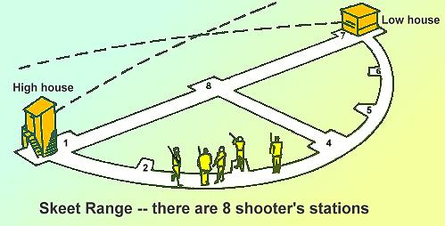

|
Skeet is defined as a form of trap shooting in which
two traps are used and targets are hurled singly or in
pairs at varying elevations and speeds so as to
simulate the angles and flight taken by game birds. A
round of skeet provides the opportunity to shoot 25
clay targets from a field layout of eight stations.
Some "birds" will be crossing targets while others are
going away or incoming. All birds leave the trap house
at approximately 41 miles per hour, but because
of the varying angles between the shooter and the
bird, the perceived speed changes on each station
 There are several state and national organization which hold sheet competitions. But at Pine Tree we only shoot skeet as recreation where the only competition is an individual trying to "go straight" and break all 25 targets. The skeet fields (we have two) are open to the public with shooting commencing at 9:00AM onTuesdays Thursdays, Saturday and Sundays and usually winding down by noon. You can use almost any shotgun model or action to shoot skeet, but the most success comes with open chokes and smaller sized shot. Please feel free to stop anytime we are open, for coffee, to watch or to try a round. We always have members on hand who enjoy helping beginners and giving advice. Hope to see
you!
|